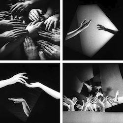
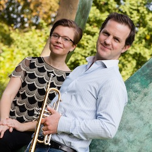
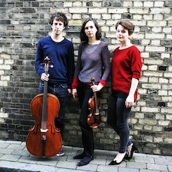
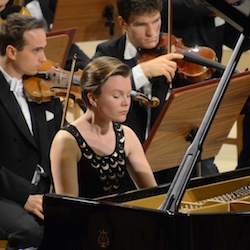
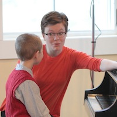
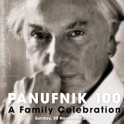
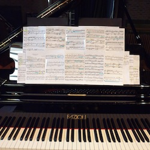
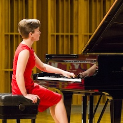

<h3 class="page-heading">PROJECTS</h3>


<table id="recording-links">
    <tr>
    <td><a href="ladyinthevan.html" class="popupwindow"
    rel="height:550,width:750,scrollbars:1,status:1,resizable:0"></a></td>
    <td width="200"><a href="ladyinthevan.html" class="popupwindow"
    rel="height:550,width:750,scrollbars:1,status:1,resizable:0">THE LADY IN THE VAN</a></td>
  </tr>

    <tr>
    <td><a href="mys.html" class="popupwindow"
    rel="height:550,width:750,scrollbars:1,status:1,resizable:0"></a></td>
    <td width="200"><a href="mys.html" class="popupwindow"
    rel="height:550,width:750,scrollbars:1,status:1,resizable:0">MYSLIVECEK CONCERTO</a></td>
  </tr>

    <tr>
    <td><a href="pianoandfilm.html" class="popupwindow"
    rel="height:550,width:750,scrollbars:1,status:1,resizable:0"></a></td>
    <td width="200"><a href="pianoandfilm.html" class="popupwindow"
    rel="height:550,width:750,scrollbars:1,status:1,resizable:0">MUSIC FOR PIANO AND FILM</a></td>
  </tr>

    <tr>
    <td><a href="fanfare.html" class="popupwindow"
    rel="height:550,width:750,scrollbars:1,status:1,resizable:0"></a></td>
    <td width="200"><a href="fanfare.html" class="popupwindow"
    rel="height:550,width:750,scrollbars:1,status:1,resizable:0">FANFARE</a></td>
  </tr>


    <tr>
    <td><a href="odysseus_trio.html" class="popupwindow"
    rel="height:550,width:750,scrollbars:1,status:1,resizable:0"></a></td>
    <td width="200"><a href="odysseus_trio.html" class="popupwindow"
    rel="height:550,width:750,scrollbars:1,status:1,resizable:0">ODYSSEUS PIANO TRIO</a></td>
  </tr>

    <tr>
    <td><a href="aidf.html" class="popupwindow"
    rel="height:550,width:600,scrollbars:1,status:1,resizable:0"></a></td>
    <td width="200"><a href="aidf.html" class="popupwindow"
    rel="height:550,width:600,scrollbars:1,status:1,resizable:0">POLISH PIANO MUSIC</a></td>
  </tr>

    <tr>
    <td><a href="children.html" class="popupwindow"
    rel="height:550,width:750,scrollbars:1,status:1,resizable:0"></a></td>
    <td width="200"><a href="children.html" class="popupwindow"
    rel="height:550,width:750,scrollbars:1,status:1,resizable:0">CHILDREN'S CONCERTS <br>and WORKSHOPS</a></td>
  </tr>

    <tr>
    <td><a href="panufnik100.html" class="popupwindow"
    rel="height:550,width:600,scrollbars:1,status:1,resizable:0"></a></td>
    <td width="200"><a href="panufnik100.html" class="popupwindow"
    rel="height:550,width:600,scrollbars:1,status:1,resizable:0">PANUFNIK 100</a></td>
  </tr>

    <tr>
    <td><a href="contemporary.html" class="popupwindow"
    rel="height:550,width:600,scrollbars:1,status:1,resizable:0"></a></td>
    <td width="200"><a href="contemporary.html" class="popupwindow"
    rel="height:550,width:600,scrollbars:1,status:1,resizable:0">CONTEMPORARY MUSIC</a></td>
  </tr>

    <tr>
    <td><a href="left_hand.html" class="popupwindow"
    rel="height:550,width:600,scrollbars:1,status:1,resizable:0"></a></td>
    <td width="200"><a href="left_hand.html" class="popupwindow"
    rel="height:450,width:750,scrollbars:1,status:1,resizable:0">LEFT-HAND PIANO MUSIC</a></td>
  </tr>
</table>
